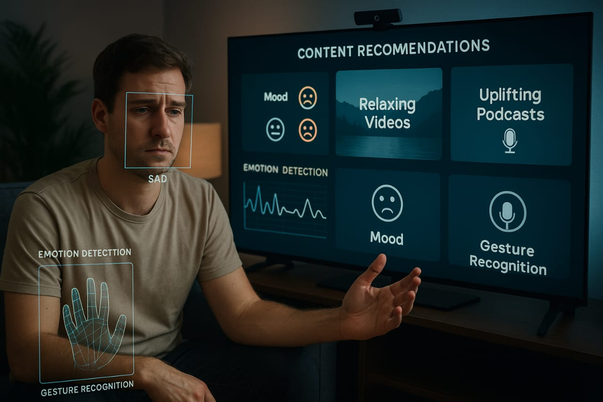

An AI-driven content recommendation system that adjusts in real time to a user’s mood and hand gestures. It delivers personalized videos and stories, offering a smooth, hands-free experience across modern digital platforms.
View on GitHubDeveloping a consistent dual-mode detection pipeline for both emotions and gestures in real time was challenging, especially with variations in lighting, face angles, and hand visibility. Ensuring smooth recommendations while keeping model latency low required multiple optimization passes and careful tuning of data-processing steps.
I strengthened my skills in multimodal ML systems, combining computer vision, deep learning, and lightweight classifiers in a unified pipeline. I also learned how to balance accuracy, responsiveness, and personalization when building emotion-aware applications that run continuously on consumer hardware.